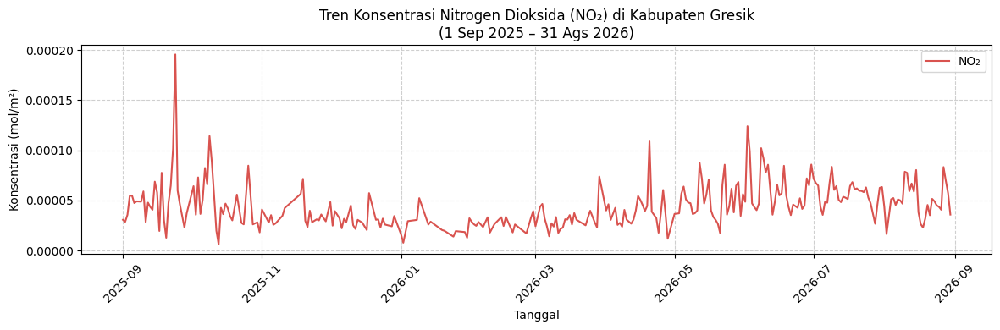
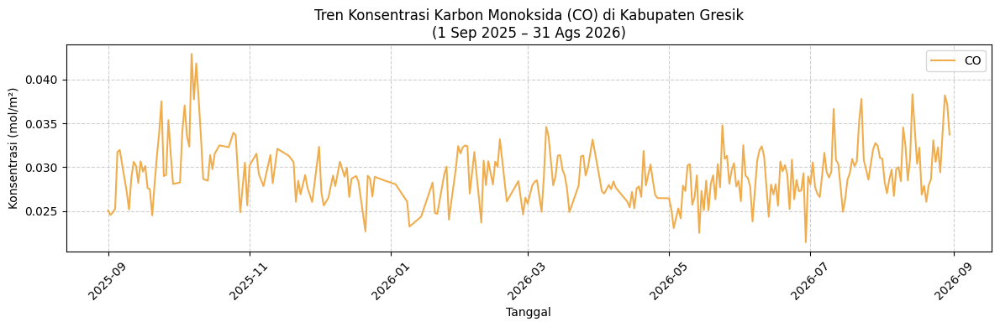
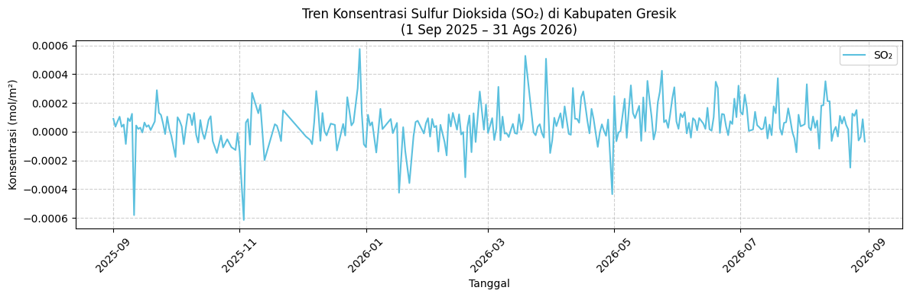
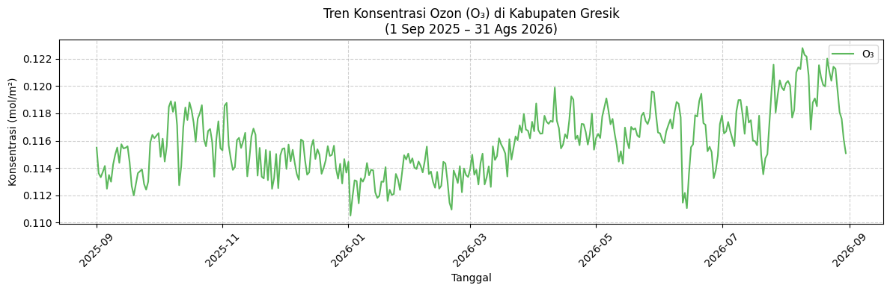

Crawling Data kualitas udara di wilayah Gresik#
Business Understanding#
Latar Belakang dan Tujuan Proyek#
Tujuan utama dari proyek sains data ini adalah:
“Menganalisis kualitas udara di wilayah Gresik berdasarkan perubahan konsentrasi polutan NO₂, CO, SO₂, dan O₃ secara temporal selama periode 1 tahun terakhir menggunakan data satelit penginderaan jauh Sentinel-5P.”
Tujuan di atas dirumuskan secara spesifik agar mencakup komponen penting dalam proyek sains data:
Data: Konsentrasi polutan (NO₂, CO, SO₂, O₃)
Periode waktu: 1 tahun terakhir (01 september 2025 hingga 31 Agustus 2026)
Wilayah: Kabupaten Gresik (berdasarkan batas koordinat wilayah)
Analisis: Analisis temporal (Time Series)
Output: Visualisasi data dan penarikan kesimpulan terkait tren kualitas udara
Data Understanding#
Menurut standar World Health Organization (WHO), terdapat beberapa polutan utama yang menjadi indikator kualitas udara dengan bukti kuat terkait dampaknya terhadap kesehatan, yaitu PM₂.₅, PM₁₀, O₃, NO₂, SO₂, dan CO.
Namun, berdasarkan ketersediaan instrumen (band) pada satelit Sentinel-5P yang digunakan dalam proyek ini, kita akan berfokus pada 4 parameter gas utama yang paling praktis dan relevan untuk diakses:
Parameter |
Nama Polutan |
Mengapa Penting? |
Sumber Umum |
|---|---|---|---|
NO₂ |
Nitrogen Dioxide |
Berkaitan erat dengan pembakaran kendaraan bermotor dan aktivitas kawasan industri. |
Asap kendaraan bermotor, pabrik industri, dan pembangkit listrik. |
CO |
Carbon Monoxide |
Merupakan indikator terjadinya proses pembakaran yang tidak sempurna. |
Kendaraan bermotor dan pembakaran bahan bakar. |
SO₂ |
Sulfur Dioxide |
Sangat relevan untuk melacak emisi dari aktivitas pembakaran bahan bakar fosil yang mengandung sulfur (belerang). |
Kawasan industri, pembangkit listrik, dan pembakaran batu bara/minyak. |
O₃ |
Ozone |
Polutan sekunder yang tidak diemisikan secara langsung, melainkan terbentuk melalui reaksi kimia di atmosfer. |
Terbentuk dari reaksi antara NOx dan VOC (Volatile Organic Compounds) dengan bantuan sinar matahari. |
Eksplorasi data - Analisis kualitas udara wilayah Gresik#
Sumber Data (Data Source)#
Data kualitas udara yang digunakan bersumber dari pantauan satelit penginderaan jauh Sentinel-5P (S5P) Precursor. Satelit ini dilengkapi instrumen TROPOMI yang sangat sensitif dalam mendeteksi komposisi gas di atmosfer. Pengambilan data dilakukan secara komputasional (crawling) menggunakan platform Copernicus Data Space melalui pustaka/API openeo.
Spesifikasi Pengambilan Data (Data Scope)#
Cakupan Spasial (Spatial Extent): Pengambilan data difokuskan secara eksklusif pada Area of Interest (AOI) Kabupaten Gresik. Ekstraksi menggunakan Bounding Box koordinat yang mencakup wilayah daratan dan pesisir sekitar Gresik.
Cakupan Temporal (Temporal Extent): Data historis ditarik mulai dari 1 Januari 2025 hingga 31 Agustus 2026 guna menangkap variasi harian, bulanan, maupun musiman selama lebih dari 1 tahun terakhir.
Agregasi (Aggregation):
Temporal: Data harian diagregasi dengan menghitung nilai rata-rata (daily mean) untuk menghindari duplikasi observasi pada hari yang sama.
Spasial: Seluruh nilai piksel satelit yang jatuh di dalam batas koordinat Gresik dirata-ratakan (spatial mean), menghasilkan satu nilai representatif untuk keseluruhan area pada hari tersebut.
Deskripsi Variabel (Features Description)#
Terdapat empat variabel polutan utama dan satu variabel waktu yang diekstrak:
NO₂ (Nitrogen Dioksida): Indikator pembakaran bahan bakar, relevan untuk memantau emisi lalu lintas dan kawasan industri di Gresik.
CO (Karbon Monoksida): Gas buang dari pembakaran tidak sempurna, mencerminkan polusi dari kendaraan bermotor atau pembakaran lain.
SO₂ (Sulfur Dioksida): Polutan yang mengindikasikan aktivitas pabrik industri berat atau pembangkit listrik yang membakar bahan bakar fosil bersulfur.
O₃ (Ozon): Polutan sekunder hasil reaksi gas-gas lain dengan sinar matahari.
Date (Tanggal): Indeks waktu perekaman satelit dalam format YYYY-MM-DD.
Pertimbangan Kualitas Data#
Dalam memproses data satelit ini, beberapa hal perlu diperhatikan:
Missing Values (Kekosongan Data): Tutupan awan yang tebal dapat menghalangi sensor satelit merekam permukaan bumi secara sempurna, menghasilkan baris data kosong (NaN).
Outliers (Pencilan): Nilai polutan yang melompat drastis pada hari tertentu harus dicek apakah itu anomali sensor, atau benar-benar ada fenomena nyata (misal: kebakaran atau lonjakan aktivitas pabrik).
Crawling Data#
# Install library untuk crawling dan manipulasi data
!pip install openeo netCDF4 pandas numpy
Requirement already satisfied: openeo in c:\users\faziz\appdata\local\programs\python\python39\lib\site-packages (0.51.0)
Requirement already satisfied: netCDF4 in c:\users\faziz\appdata\local\programs\python\python39\lib\site-packages (1.7.2)
Requirement already satisfied: pandas in c:\users\faziz\appdata\local\programs\python\python39\lib\site-packages (2.3.3)
Requirement already satisfied: numpy in c:\users\faziz\appdata\local\programs\python\python39\lib\site-packages (2.0.2)
Requirement already satisfied: requests>=2.26.0 in c:\users\faziz\appdata\local\programs\python\python39\lib\site-packages (from openeo) (2.32.5)
Requirement already satisfied: urllib3>=1.9.0 in c:\users\faziz\appdata\local\programs\python\python39\lib\site-packages (from openeo) (2.6.3)
Requirement already satisfied: shapely>=1.6.4 in c:\users\faziz\appdata\local\programs\python\python39\lib\site-packages (from openeo) (2.0.7)
Requirement already satisfied: xarray<2025.01.2,>=0.12.3 in c:\users\faziz\appdata\local\programs\python\python39\lib\site-packages (from openeo) (2024.7.0)
Requirement already satisfied: pystac>=1.5.0 in c:\users\faziz\appdata\local\programs\python\python39\lib\site-packages (from openeo) (1.10.1)
Requirement already satisfied: deprecated>=1.2.12 in c:\users\faziz\appdata\local\programs\python\python39\lib\site-packages (from openeo) (1.3.1)
Requirement already satisfied: oschmod>=0.3.12 in c:\users\faziz\appdata\local\programs\python\python39\lib\site-packages (from openeo) (0.3.12)
Requirement already satisfied: geopandas>=0.14 in c:\users\faziz\appdata\local\programs\python\python39\lib\site-packages (from openeo) (1.0.1)
Requirement already satisfied: python-dateutil>=2.8.2 in c:\users\faziz\appdata\local\programs\python\python39\lib\site-packages (from pandas) (2.9.0.post0)
Requirement already satisfied: pytz>=2020.1 in c:\users\faziz\appdata\local\programs\python\python39\lib\site-packages (from pandas) (2025.2)
Requirement already satisfied: tzdata>=2022.7 in c:\users\faziz\appdata\local\programs\python\python39\lib\site-packages (from pandas) (2025.3)
Requirement already satisfied: packaging>=23.1 in c:\users\faziz\appdata\local\programs\python\python39\lib\site-packages (from xarray<2025.01.2,>=0.12.3->openeo) (26.0)
Requirement already satisfied: cftime in c:\users\faziz\appdata\local\programs\python\python39\lib\site-packages (from netCDF4) (1.6.4.post1)
Requirement already satisfied: certifi in c:\users\faziz\appdata\local\programs\python\python39\lib\site-packages (from netCDF4) (2026.1.4)
Requirement already satisfied: wrapt<3,>=1.10 in c:\users\faziz\appdata\local\programs\python\python39\lib\site-packages (from deprecated>=1.2.12->openeo) (2.4.0)
Requirement already satisfied: pyogrio>=0.7.2 in c:\users\faziz\appdata\local\programs\python\python39\lib\site-packages (from geopandas>=0.14->openeo) (0.11.1)
Requirement already satisfied: pyproj>=3.3.0 in c:\users\faziz\appdata\local\programs\python\python39\lib\site-packages (from geopandas>=0.14->openeo) (3.6.1)
Requirement already satisfied: pywin32 in c:\users\faziz\appdata\local\programs\python\python39\lib\site-packages (from oschmod>=0.3.12->openeo) (311)
Requirement already satisfied: six>=1.5 in c:\users\faziz\appdata\local\programs\python\python39\lib\site-packages (from python-dateutil>=2.8.2->pandas) (1.17.0)
Requirement already satisfied: charset_normalizer<4,>=2 in c:\users\faziz\appdata\local\programs\python\python39\lib\site-packages (from requests>=2.26.0->openeo) (3.4.4)
Requirement already satisfied: idna<4,>=2.5 in c:\users\faziz\appdata\local\programs\python\python39\lib\site-packages (from requests>=2.26.0->openeo) (3.11)
# Koneksi ke Server Copernicus (OpenEO)
import openeo
connection = openeo.connect("openeo.dataspace.copernicus.eu").authenticate_oidc()
Authenticated using refresh token.
Eksekusi Crawling Data Satelit (NO2, CO, SO2, O3)#
gresik_aoi = {
"type": "Polygon",
"coordinates": [
[
[112.67942786996122, -7.213184809212251],
[112.449759, -7.2489316],
[112.4661196, -7.0415282],
[112.3945295, -6.9969664],
[112.4940069, -6.8292297],
[112.67942786996122, -6.8646196],
[112.67942786996122, -7.213184809212251]
]
]
}
# Bounding Box (Diambil dari nilai min/max koordinat di atas)
bbox_gresik = {
"west": 112.3945295, # Bujur terkecil
"south": -7.2489316, # Lintang terkecil
"east": 112.67942786996122, # Bujur terbesar
"north": -6.8292297 # Lintang terbesar
}
rentang_waktu = ["2025-09-01", "2026-08-31"]
# Fungsi bantuan untuk memudahkan load dan agregasi
def crawl_polutan(band_name):
cube = connection.load_collection(
"SENTINEL_5P_L2",
temporal_extent=rentang_waktu,
spatial_extent=bbox_gresik,
bands=[band_name]
)
# Agregasi waktu (rata-rata harian)
daily = cube.aggregate_temporal_period(reducer="mean", period="day")
# Agregasi spasial (rata-rata di dalam poligon GeoJSON Gresik)
aoi_mean = daily.aggregate_spatial(reducer="mean", geometries=gresik_aoi)
return aoi_mean
# menyiapkan proses (data cube) untuk masing-masing polutan
s5p_NO2 = crawl_polutan("NO2")
s5p_CO = crawl_polutan("CO")
s5p_SO2 = crawl_polutan("SO2")
s5p_O3 = crawl_polutan("O3")
# Eksekusi job dan simpan ke file NetCDF (.nc)
print("Memulai NO2...")
s5p_NO2.execute_batch(title="NO2_Gresik", outputfile="NO2_Gresik.nc")
print("Memulai CO...")
s5p_CO.execute_batch(title="CO_Gresik", outputfile="CO_Gresik.nc")
print("Memulai SO2...")
s5p_SO2.execute_batch(title="SO2_Gresik", outputfile="SO2_Gresik.nc")
print("Memulai O3...")
s5p_O3.execute_batch(title="O3_Gresik", outputfile="O3_Gresik.nc")
print("Semua file selesai!")
Memulai NO2...
0:00:00 Job 'j-26090618212540ee942c752e51610e25': send 'start'
0:00:02 Job 'j-26090618212540ee942c752e51610e25': created (progress 0%)
0:00:08 Job 'j-26090618212540ee942c752e51610e25': queued (progress 0%)
0:00:15 Job 'j-26090618212540ee942c752e51610e25': queued (progress 0%)
0:00:23 Job 'j-26090618212540ee942c752e51610e25': queued (progress 0%)
Transformasi Data Mentah (NetCDF ke CSV)#
File keluaran Copernicus berformat .nc bersifat multidimensi. Kita perlu mengekstrak array konsentrasi polutan dan waktunya, lalu mengonversinya menjadi DataFrame dua dimensi (.csv) agar siap pakai untuk analisis lanjutan. sekaligus menggabungkan keemmpat data tersebut menjadi 1 file .csv
import netCDF4
import pandas as pd
import functools
# Daftar polutan dan nama file .nc yang sudah diunduh
polutan_list = ["NO2", "CO", "SO2", "O3"]
file_nc = ["NO2_Gresik.nc", "CO_Gresik.nc", "SO2_Gresik.nc", "O3_Gresik.nc"]
# List untuk menyimpan DataFrame masing-masing polutan sementara
dfs_list = []
for polutan, file in zip(polutan_list, file_nc):
try:
ds = netCDF4.Dataset(file)
kadar = ds.variables[polutan][:].squeeze()
# Ekstrak tanggal SPESIFIK untuk file ini
time_var = ds.variables["t"]
try:
dates = netCDF4.num2date(time_var[:], units=time_var.units)
except Exception:
dates = time_var[:]
new_dates = [d.strftime('%Y-%m-%d') for d in dates]
df_temp = pd.DataFrame({
"date": pd.to_datetime(new_dates),
polutan: kadar
})
dfs_list.append(df_temp)
print(f"Berhasil mengekstrak {polutan} (Jumlah data: {len(df_temp)} hari)")
except Exception as e:
print(f"Error memproses file {file}: {e}")
# Proses Penggabungan (Merge) berdasarkan kolom 'date'
if dfs_list:
df_gabungan = functools.reduce(lambda left, right: pd.merge(left, right, on='date', how='outer'), dfs_list)
df_gabungan = df_gabungan.sort_values('date').reset_index(drop=True)
df_gabungan['date'] = df_gabungan['date'].dt.strftime('%Y-%m-%d')
# Export langsung menjadi 1 file CSV tunggal
nama_file_akhir = "Polutan_Gresik_Terkini.csv"
df_gabungan.to_csv(nama_file_akhir, index=False)
print(f"\n SUKSES: Semua data berhasil digabung menjadi 1 file -> {nama_file_akhir}")
# Tampilkan cuplikan 5 data awal
display(df_gabungan.head())
else:
print("Gagal mengekstrak data dari file NetCDF.")
Berhasil mengekstrak NO2 (Jumlah data: 288 hari)
Berhasil mengekstrak CO (Jumlah data: 275 hari)
Berhasil mengekstrak SO2 (Jumlah data: 307 hari)
Berhasil mengekstrak O3 (Jumlah data: 360 hari)
SUKSES: Semua data berhasil digabung menjadi 1 file -> Polutan_Gresik_Terkini.csv
| date | NO2 | CO | SO2 | O3 | |
|---|---|---|---|---|---|
| 0 | 2025-09-01 | 0.000031 | 0.025056 | 0.000090 | 0.115491 |
| 1 | 2025-09-02 | 0.000029 | 0.024533 | 0.000035 | 0.113613 |
| 2 | 2025-09-03 | 0.000036 | 0.024816 | 0.000072 | 0.113319 |
| 3 | 2025-09-04 | 0.000055 | 0.025231 | 0.000104 | 0.113707 |
| 4 | 2025-09-05 | 0.000055 | 0.031736 | 0.000034 | 0.114151 |
Visualisasi Hasil dengan Grafik Kartesius#
Menampilkan grafik kartesius (line plot) deret waktu konsentrasi polutan kualitas udara (NO₂, CO, SO₂, O₃) di area Kabupaten Gresik selama rentang waktu lebih dari 1 tahun terakhir.
!pip install matplotlib
Collecting matplotlib
Downloading matplotlib-3.9.4-cp39-cp39-win_amd64.whl.metadata (11 kB)
Collecting contourpy>=1.0.1 (from matplotlib)
Downloading contourpy-1.3.0-cp39-cp39-win_amd64.whl.metadata (5.4 kB)
Collecting cycler>=0.10 (from matplotlib)
Downloading cycler-0.12.1-py3-none-any.whl.metadata (3.8 kB)
Collecting fonttools>=4.22.0 (from matplotlib)
Downloading fonttools-4.60.2-cp39-cp39-win_amd64.whl.metadata (115 kB)
Collecting kiwisolver>=1.3.1 (from matplotlib)
Downloading kiwisolver-1.4.7-cp39-cp39-win_amd64.whl.metadata (6.4 kB)
Requirement already satisfied: numpy>=1.23 in c:\users\faziz\appdata\local\programs\python\python39\lib\site-packages (from matplotlib) (2.0.2)
Requirement already satisfied: packaging>=20.0 in c:\users\faziz\appdata\local\programs\python\python39\lib\site-packages (from matplotlib) (26.0)
Collecting pillow>=8 (from matplotlib)
Downloading pillow-11.3.0-cp39-cp39-win_amd64.whl.metadata (9.2 kB)
Collecting pyparsing>=2.3.1 (from matplotlib)
Downloading pyparsing-3.3.2-py3-none-any.whl.metadata (5.8 kB)
Requirement already satisfied: python-dateutil>=2.7 in c:\users\faziz\appdata\local\programs\python\python39\lib\site-packages (from matplotlib) (2.9.0.post0)
Collecting importlib-resources>=3.2.0 (from matplotlib)
Downloading importlib_resources-6.5.2-py3-none-any.whl.metadata (3.9 kB)
Requirement already satisfied: zipp>=3.1.0 in c:\users\faziz\appdata\local\programs\python\python39\lib\site-packages (from importlib-resources>=3.2.0->matplotlib) (3.23.0)
Requirement already satisfied: six>=1.5 in c:\users\faziz\appdata\local\programs\python\python39\lib\site-packages (from python-dateutil>=2.7->matplotlib) (1.17.0)
Downloading matplotlib-3.9.4-cp39-cp39-win_amd64.whl (7.8 MB)
---------------------------------------- 0.0/7.8 MB ? eta -:--:--
---- ----------------------------------- 0.8/7.8 MB 4.2 MB/s eta 0:00:02
---------- ----------------------------- 2.1/7.8 MB 5.1 MB/s eta 0:00:02
----------------- ---------------------- 3.4/7.8 MB 5.4 MB/s eta 0:00:01
-------------------------- ------------- 5.2/7.8 MB 6.3 MB/s eta 0:00:01
---------------------------- ----------- 5.5/7.8 MB 6.2 MB/s eta 0:00:01
---------------------------- ----------- 5.5/7.8 MB 6.2 MB/s eta 0:00:01
-------------------------------------- - 7.6/7.8 MB 5.2 MB/s eta 0:00:01
---------------------------------------- 7.8/7.8 MB 5.1 MB/s 0:00:01
Downloading contourpy-1.3.0-cp39-cp39-win_amd64.whl (211 kB)
Downloading cycler-0.12.1-py3-none-any.whl (8.3 kB)
Downloading fonttools-4.60.2-cp39-cp39-win_amd64.whl (1.5 MB)
---------------------------------------- 0.0/1.5 MB ? eta -:--:--
-------------------- ------------------- 0.8/1.5 MB 3.7 MB/s eta 0:00:01
---------------------------------------- 1.5/1.5 MB 4.1 MB/s 0:00:00
Downloading importlib_resources-6.5.2-py3-none-any.whl (37 kB)
Downloading kiwisolver-1.4.7-cp39-cp39-win_amd64.whl (55 kB)
Downloading pillow-11.3.0-cp39-cp39-win_amd64.whl (7.0 MB)
---------------------------------------- 0.0/7.0 MB ? eta -:--:--
------- -------------------------------- 1.3/7.0 MB 6.7 MB/s eta 0:00:01
------------- -------------------------- 2.4/7.0 MB 6.4 MB/s eta 0:00:01
--------------------- ------------------ 3.7/7.0 MB 6.1 MB/s eta 0:00:01
------------------------------ --------- 5.2/7.0 MB 6.1 MB/s eta 0:00:01
------------------------------------ --- 6.3/7.0 MB 6.1 MB/s eta 0:00:01
---------------------------------------- 7.0/7.0 MB 5.8 MB/s 0:00:01
Downloading pyparsing-3.3.2-py3-none-any.whl (122 kB)
Installing collected packages: pyparsing, pillow, kiwisolver, importlib-resources, fonttools, cycler, contourpy, matplotlib
---------------------------------------- 0/8 [pyparsing]
----- ---------------------------------- 1/8 [pillow]
----- ---------------------------------- 1/8 [pillow]
----- ---------------------------------- 1/8 [pillow]
----- ---------------------------------- 1/8 [pillow]
----- ---------------------------------- 1/8 [pillow]
----- ---------------------------------- 1/8 [pillow]
----- ---------------------------------- 1/8 [pillow]
----- ---------------------------------- 1/8 [pillow]
----- ---------------------------------- 1/8 [pillow]
----- ---------------------------------- 1/8 [pillow]
----- ---------------------------------- 1/8 [pillow]
----- ---------------------------------- 1/8 [pillow]
----- ---------------------------------- 1/8 [pillow]
----- ---------------------------------- 1/8 [pillow]
---------- ----------------------------- 2/8 [kiwisolver]
---------- ----------------------------- 2/8 [kiwisolver]
---------- ----------------------------- 2/8 [kiwisolver]
--------------- ------------------------ 3/8 [importlib-resources]
--------------- ------------------------ 3/8 [importlib-resources]
--------------- ------------------------ 3/8 [importlib-resources]
--------------- ------------------------ 3/8 [importlib-resources]
--------------- ------------------------ 3/8 [importlib-resources]
-------------------- ------------------- 4/8 [fonttools]
-------------------- ------------------- 4/8 [fonttools]
-------------------- ------------------- 4/8 [fonttools]
-------------------- ------------------- 4/8 [fonttools]
-------------------- ------------------- 4/8 [fonttools]
-------------------- ------------------- 4/8 [fonttools]
-------------------- ------------------- 4/8 [fonttools]
-------------------- ------------------- 4/8 [fonttools]
-------------------- ------------------- 4/8 [fonttools]
-------------------- ------------------- 4/8 [fonttools]
-------------------- ------------------- 4/8 [fonttools]
-------------------- ------------------- 4/8 [fonttools]
-------------------- ------------------- 4/8 [fonttools]
-------------------- ------------------- 4/8 [fonttools]
-------------------- ------------------- 4/8 [fonttools]
-------------------- ------------------- 4/8 [fonttools]
-------------------- ------------------- 4/8 [fonttools]
-------------------- ------------------- 4/8 [fonttools]
-------------------- ------------------- 4/8 [fonttools]
-------------------- ------------------- 4/8 [fonttools]
-------------------- ------------------- 4/8 [fonttools]
-------------------- ------------------- 4/8 [fonttools]
-------------------- ------------------- 4/8 [fonttools]
-------------------- ------------------- 4/8 [fonttools]
-------------------- ------------------- 4/8 [fonttools]
-------------------- ------------------- 4/8 [fonttools]
-------------------- ------------------- 4/8 [fonttools]
-------------------- ------------------- 4/8 [fonttools]
------------------------------ --------- 6/8 [contourpy]
----------------------------------- ---- 7/8 [matplotlib]
----------------------------------- ---- 7/8 [matplotlib]
----------------------------------- ---- 7/8 [matplotlib]
----------------------------------- ---- 7/8 [matplotlib]
----------------------------------- ---- 7/8 [matplotlib]
----------------------------------- ---- 7/8 [matplotlib]
----------------------------------- ---- 7/8 [matplotlib]
----------------------------------- ---- 7/8 [matplotlib]
----------------------------------- ---- 7/8 [matplotlib]
----------------------------------- ---- 7/8 [matplotlib]
----------------------------------- ---- 7/8 [matplotlib]
----------------------------------- ---- 7/8 [matplotlib]
----------------------------------- ---- 7/8 [matplotlib]
----------------------------------- ---- 7/8 [matplotlib]
----------------------------------- ---- 7/8 [matplotlib]
----------------------------------- ---- 7/8 [matplotlib]
----------------------------------- ---- 7/8 [matplotlib]
----------------------------------- ---- 7/8 [matplotlib]
----------------------------------- ---- 7/8 [matplotlib]
----------------------------------- ---- 7/8 [matplotlib]
----------------------------------- ---- 7/8 [matplotlib]
----------------------------------- ---- 7/8 [matplotlib]
----------------------------------- ---- 7/8 [matplotlib]
----------------------------------- ---- 7/8 [matplotlib]
----------------------------------- ---- 7/8 [matplotlib]
----------------------------------- ---- 7/8 [matplotlib]
----------------------------------- ---- 7/8 [matplotlib]
----------------------------------- ---- 7/8 [matplotlib]
----------------------------------- ---- 7/8 [matplotlib]
----------------------------------- ---- 7/8 [matplotlib]
----------------------------------- ---- 7/8 [matplotlib]
----------------------------------- ---- 7/8 [matplotlib]
----------------------------------- ---- 7/8 [matplotlib]
----------------------------------- ---- 7/8 [matplotlib]
----------------------------------- ---- 7/8 [matplotlib]
---------------------------------------- 8/8 [matplotlib]
Successfully installed contourpy-1.3.0 cycler-0.12.1 fonttools-4.60.2 importlib-resources-6.5.2 kiwisolver-1.4.7 matplotlib-3.9.4 pillow-11.3.0 pyparsing-3.3.2
Visualisasi NO2#
import pandas as pd
import matplotlib.pyplot as plt
df_final = pd.read_csv("Polutan_Gresik_Terkini.csv")
df_no2 = df_final.dropna(subset=['NO2']).copy()
df_no2['date'] = pd.to_datetime(df_no2['date'])
fig, ax = plt.subplots(figsize=(12, 4), dpi=100)
ax.plot(df_no2['date'], df_no2['NO2'], linewidth=1.5, label="NO₂", color="#d9534f")
ax.set_title("Tren Konsentrasi Nitrogen Dioksida (NO₂) di Kabupaten Gresik\n(1 Sep 2025 – 31 Ags 2026)")
ax.set_xlabel("Tanggal")
ax.set_ylabel("Konsentrasi (mol/m²)")
ax.grid(True, linestyle="--", alpha=0.6)
ax.legend()
plt.xticks(rotation=45)
plt.tight_layout()
plt.show()

Visualisasi CO#
import pandas as pd
import matplotlib.pyplot as plt
df_final = pd.read_csv("Polutan_Gresik_Terkini.csv")
df_co = df_final.dropna(subset=['CO']).copy()
df_co['date'] = pd.to_datetime(df_co['date'])
fig, ax = plt.subplots(figsize=(12, 4), dpi=100)
ax.plot(df_co['date'], df_co['CO'], linewidth=1.5, label="CO", color="#f0ad4e")
ax.set_title("Tren Konsentrasi Karbon Monoksida (CO) di Kabupaten Gresik\n(1 Sep 2025 – 31 Ags 2026)")
ax.set_xlabel("Tanggal")
ax.set_ylabel("Konsentrasi (mol/m²)")
ax.grid(True, linestyle="--", alpha=0.6)
ax.legend()
plt.xticks(rotation=45)
plt.tight_layout()
plt.show()

Visualisasi SO2#
import pandas as pd
import matplotlib.pyplot as plt
df_final = pd.read_csv("Polutan_Gresik_Terkini.csv")
df_so2 = df_final.dropna(subset=['SO2']).copy()
df_so2['date'] = pd.to_datetime(df_so2['date'])
fig, ax = plt.subplots(figsize=(12, 4), dpi=100)
ax.plot(df_so2['date'], df_so2['SO2'], linewidth=1.5, label="SO₂", color="#5bc0de")
ax.set_title("Tren Konsentrasi Sulfur Dioksida (SO₂) di Kabupaten Gresik\n(1 Sep 2025 – 31 Ags 2026)")
ax.set_xlabel("Tanggal")
ax.set_ylabel("Konsentrasi (mol/m²)")
ax.grid(True, linestyle="--", alpha=0.6)
ax.legend()
plt.xticks(rotation=45)
plt.tight_layout()
plt.show()

Visualisasi O3#
import pandas as pd
import matplotlib.pyplot as plt
df_final = pd.read_csv("Polutan_Gresik_Terkini.csv")
df_o3 = df_final.dropna(subset=['O3']).copy()
df_o3['date'] = pd.to_datetime(df_o3['date'])
fig, ax = plt.subplots(figsize=(12, 4), dpi=100)
ax.plot(df_o3['date'], df_o3['O3'], linewidth=1.5, label="O₃", color="#5cb85c")
ax.set_title("Tren Konsentrasi Ozon (O₃) di Kabupaten Gresik\n(1 Sep 2025 – 31 Ags 2026)")
ax.set_xlabel("Tanggal")
ax.set_ylabel("Konsentrasi (mol/m²)")
ax.grid(True, linestyle="--", alpha=0.6)
ax.legend()
plt.xticks(rotation=45)
plt.tight_layout()
plt.show()

Visualisasi Peta Heatmap (Folium)#
!pip install folium
Collecting folium
Downloading folium-0.20.0-py2.py3-none-any.whl.metadata (4.2 kB)
Collecting branca>=0.6.0 (from folium)
Downloading branca-0.8.2-py3-none-any.whl.metadata (1.7 kB)
Requirement already satisfied: jinja2>=2.9 in c:\users\faziz\appdata\local\programs\python\python39\lib\site-packages (from folium) (3.1.6)
Requirement already satisfied: numpy in c:\users\faziz\appdata\local\programs\python\python39\lib\site-packages (from folium) (2.0.2)
Requirement already satisfied: requests in c:\users\faziz\appdata\local\programs\python\python39\lib\site-packages (from folium) (2.32.5)
Collecting xyzservices (from folium)
Downloading xyzservices-2026.9.1-py3-none-any.whl.metadata (4.1 kB)
Requirement already satisfied: MarkupSafe>=2.0 in c:\users\faziz\appdata\local\programs\python\python39\lib\site-packages (from jinja2>=2.9->folium) (3.0.3)
Requirement already satisfied: charset_normalizer<4,>=2 in c:\users\faziz\appdata\local\programs\python\python39\lib\site-packages (from requests->folium) (3.4.4)
Requirement already satisfied: idna<4,>=2.5 in c:\users\faziz\appdata\local\programs\python\python39\lib\site-packages (from requests->folium) (3.11)
Requirement already satisfied: urllib3<3,>=1.21.1 in c:\users\faziz\appdata\local\programs\python\python39\lib\site-packages (from requests->folium) (2.6.3)
Requirement already satisfied: certifi>=2017.4.17 in c:\users\faziz\appdata\local\programs\python\python39\lib\site-packages (from requests->folium) (2026.1.4)
Downloading folium-0.20.0-py2.py3-none-any.whl (113 kB)
Downloading branca-0.8.2-py3-none-any.whl (26 kB)
Downloading xyzservices-2026.9.1-py3-none-any.whl (98 kB)
Installing collected packages: xyzservices, branca, folium
------------- -------------------------- 1/3 [branca]
-------------------------- ------------- 2/3 [folium]
-------------------------- ------------- 2/3 [folium]
-------------------------- ------------- 2/3 [folium]
-------------------------- ------------- 2/3 [folium]
---------------------------------------- 3/3 [folium]
Successfully installed branca-0.8.2 folium-0.20.0 xyzservices-2026.9.1
import folium
from folium.plugins import HeatMap
import numpy as np
# Pusat koordinat lokasi Kabupaten Gresik
center_lat, center_lon = -7.16, 112.56
# Inisialisasi peta interaktif Folium
peta_kualitas_udara = folium.Map(
location=[center_lat, center_lon],
zoom_start=11,
tiles="OpenStreetMap"
)
# Menambahkan layer Poligon batas wilayah Gresik
folium.GeoJson(
gresik_aoi,
name="Area Pengamatan (AOI) Gresik",
style_function=lambda x: {
"fillColor": "#3388ff",
"color": "#0000ff",
"weight": 2,
"fillOpacity": 0.15,
},
).add_to(peta_kualitas_udara)
# Menambahkan Marker (Pin Merah) di tengah Gresik
folium.Marker(
location=[center_lat, center_lon],
popup="<b>Lokasi Pengamatan Utama</b><br>Kabupaten Gresik",
tooltip="Pusat Gresik",
icon=folium.Icon(color="red", icon="info-sign"),
).add_to(peta_kualitas_udara)
np.random.seed(42)
sample_lats = np.random.uniform(-7.24, -6.83, 200) # Lintang (Selatan - Utara)
sample_lons = np.random.uniform(112.39, 112.67, 200) # Bujur (Barat - Timur)
sample_weights = np.random.uniform(0.2, 1.0, 200)
heatmap_points = list(zip(sample_lats, sample_lons, sample_weights))
HeatMap(
heatmap_points,
name="Heatmap Intensitas Polusi Udara",
radius=18,
blur=12,
max_zoom=1,
).add_to(peta_kualitas_udara)
folium.LayerControl().add_to(peta_kualitas_udara)
peta_kualitas_udara